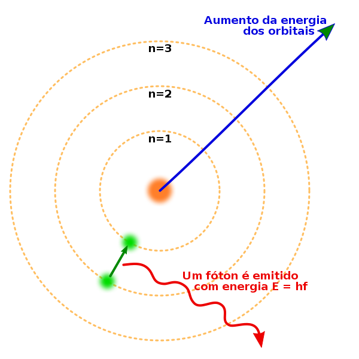

ESZI017-17SA - FPG - 2022.3
Fundamentos de Processamento Gráfico
Turma A1 - noturno
Integrantes da equipe
BRUNO ARAUJO SANTOS DO NASCIMENTO - 11201720606
LUIZ EDUARDO GRACINDO SILVA - 11201921251
MATHEUS VICTOR SOARES DE ARAUJO - 11201920270
VINICIUS SOUZA DE OLIVEIRA - 11201920654
VIVIANE COPEDE - 11201722075
Relatórios
Seminário S1 - TEMA
Nossa equipe pretende representar de forma didática o funcionamento de um átomo. Para a primeira entrega pensamos em representar algum modelo atômico e em seguida simular algum evento como fissão, fusão ou decaimento.
Seminário - Modelagem
O modelo atômico escolhido por nossa equipe foi o Modelo de Bohr. Apesar de ser um modelo mais simples ele foi capaz de fazer previsões acerca de diversas caracteristicas do átomo de hidrogênio sendo relevante até os dias de hoje não somente como uma maneira mais didática de introduzir o tema, mas também para fazer estimativas mais simples. Além disso, o Modelo de Bohr é bastante visual e com fórmulas bem definidas sobre o comportamento do elétron ao redor do núcleo sendo assim um ótimo modelo para ser representado através de técnicas de computação gráfica.
Uma representação gráfica do modelo é apresentada na imagem a seguir:
Para calular o raio e velocidade dos elétron vamos utilizar as fórmulas a seguir:
Fonte: https://pt.wikipedia.org/wiki/%C3%81tomo_de_Bohr
Para desenvolver nosso programa seguiremos uma configuração bastante semelhante aos projetos do lab 03. Após o setup básico de janela e cameras vamos adicionar as funções glutDisplayFunc para desenhar nosso modelo e glutIdleFunc para redesenhar o display e fazer a rotacão do elétron em torno do núcleo.
O diagrama de blocos a seguir representa de maneira resumida o funcionamento do nosso sistema:

Link do diagrama: https://excalidraw.com/#json=eNRvKrxhmFqp-nWsXP2bT,FnVxz3dBhXMesOdVz5yBHw
Lab01: OpenGL linux
Resumo dos passos que foram executados:
1) Configurar o ambiente:
- criar novo usuario com permissão de administrador no OS
- baixar as bibliotecas openGL e outras dependencias
- baixar o arquivo modelo do experimento
2) Compilar e executar o programa
- compilar o arquivo C
- executar o programa a partir do terminal com
- analisar as figuras geradas e comparar com o código do arquivo.
- printar algumas amostras.
Para fazer todos os passos seguimos o PDF disponibilizado no Moodle. Aqui no site não vamos colocar a parte de criação de um novo usuário admin porque é um processo especifico para os computadores da universidade.
Instalação
Após acessar o usuário admin podemos começar a instalação dos programas. Para isso devemos primeiro abrir o terminal usando o comando CTRL+SHIFT+T e digitar os seguintes comandos em ordem:
sudo apt-get update
sudo apt-get install build-essential
sudo apt upgrade
sudo apt-get install g++ freeglut3-dev buildessential libx11-dev
libxmu-dev libxi-dev libglu1-mesa libglu1-mesa-dev
sudo apt-get install geany
Compilar
Após instalar as libs podemos baixar o arquivo lesson5.cpp disponibilizado no Moodle e rodar o seguinte comando para compilar o programa:
gcc -o <your_file> <your_file>.cpp -lglut -lGL -lGLU
O arquivo compilado será gerado com o nome test que foi o que passamos no parametro -o rodando o seguinte comando:
./<your_file>
Execução


Análise e Conclusão
As figuras geradas são simples, porem, são importantes para
compreender o funcionamento básico de funções openGl e do fluxo de
renderização. Peguemos o exemplo do Cubo, com a funçao
glBegin(GL_QUADS) declaramos o inicio do desenho da forma, em
seguida a função glVertex3f() é chamada 4 vezes para definir
4 pontos no espaço 3D, formando uma área quadrada que é preenchida
com cor pela função glColor3f(). Assim para formar o cubo,
esse bloco de declarações é feito 6 vezes (1 para cada lado do cubo)
em que mudamos é apenas os parametros de posição no espaço 3D.
Concluindo, o que temos é um padrão na programação de figuras
simples que é replicavel para figuras mais complexas.
Lab02: Introdução à Estrutura de OpenGL
Exercício 1
A primeira coisa que tentamos para desenhar a primeira figura foi usar o comando GL_POLYGON, porém esse comando só funciona com polígonos convexos. Portanto, foi necessário desenhar a figura como combinação de tringulos e usar o comando GL_TRIANGLES. Para obter as coordenadas de cada triângulo criamos um desenho no site Geograb 2D
Para obter as coordenadas primeiro reproduzimos os pontos no Geogebra 2D e depois quebramos as figuras em 3 trinângulos como mostra a imagem a seguir.

Para encontrar a cor, usamos a ferramenta de color picker do Chrome e normalizamos a escala RGB para ficar entre 0 e 1 como exige o OpenGL.
O código final ficou assim:
glBegin(GL_TRIANGLES);
glColor3f(.89, 1.0, 1.0);
glVertex3f(0.13, 0.73, 0.0); // p1
glVertex3f(0.26, 0.33, 0.0); // p2
glVertex3f(0.54, 0.61, 0.0); // p5
glVertex3f(0.26, 0.33, 0.0); // p2
glVertex3f(0.95, 0.42, 0.0); // p3
glVertex3f(0.54, 0.61, 0.0); // p5
glVertex3f(0.95, 0.42, 0.0); // p3
glVertex3f(0.84, 0.88, 0.0); // p4
glVertex3f(0.54, 0.61, 0.0); // p5
glEnd();
O código completo pode ser encontrado no seguinte link: https://github.com/ufabc-processamento-grafico/ufabc_pagina_processamento_grafico/blob/main/labs/lab02/5.1.cpp
Resultado:

Exercício 2
Para fazer o exercício 2, iniciamos de maneira bem semelhante ao exercício 1. Começamos buscando as cores com o color picker e mapeando os pontos.
O OpenGL não cria círculos automaticamente, portanto foi necessário criar um looping usando a formula do círculo para gerar as figuras, fizemos isso usando o código a seguir:
GLdouble PI = 3.1415926535897;
GLint circle_points = 1000;
glBegin(GL_LINE_LOOP);
for (i = 0; i < circle_points; i++)
{
angle = 2 * PI * i / circle_points;
glVertex2f(cos(angle), sin(angle));
}
glEnd();
As demais figuras foram criadas usando as primitivas básicas: GL_POLYGON, GL_QUADS e GL_TRIANGLES
O código completo pode ser encontrado no seguinte link: https://github.com/ufabc-processamento-grafico/ufabc_pagina_processamento_grafico/blob/main/labs/lab02/5.2.cpp
Para compilar o código no Linux foi necessário agregar a flag -lm para linkar a libm que possuí métodos matemáticos usados para desenhar o círculo. O comando ficou assim:
gcc 5.2.cpp -lglut -lGL -lGLU -lm
Resultado:

Lab03: Modelagem e Transform2D
1º. Projeto: “model.c”
Matriz Indentidade. Por que ela foi carregada?
Para reinicializar a matriz de transformação e garantir que não vamos misturar com a anterior
Quais os valores dos argumentos das transformações realizadas?
Translação: T(dx, dy)
(-20.0, 0.0)
Escalonamento: S(sx, sy)
(1.5, 0.5, 1.0)
Rotação: R(⊝)
(90.0, 0.0, 0.0, 1.0)
Tecla para saída da execução do programa:
ESC
2º. Projeto: “double.c”
Guarda da Matriz na Pilha. Por que isso deve ser feito?
Para conseguir concatenar facilmente transformações de diferentes matrizes e da mesma forma retirar transformações da stack antes de aplicar no próximo modelo.
. Qual o valor do angulo de Rotação: R(⊝) em cada apresentação?
(spin, 0.0, 0.0, 1.0)
com spin alterando em 2.0 graus a cada apresentação.
Por que a animação (mudança do desenho na tela) ocorre no programa?
Porque chamamos a função spinDisplay para o método glutIdleFunc que fica executando em loop. Dentro da funçâo spinDisplay temos a chamada do método glutPostRedisplay que repinta a tela.
3º. Projeto: “rotacao.c”
Rotação: R(⊝)
(spin, 0.0, 0.0, 1.0)
com spin alterando em 1.0 graus a cada apresentação.
4º. Projeto: “planet.c”
Quais as transformações utilizadas para os dois tipos de movimento do planeta?
Para a rotação usamos glRotatef no mesmo eixo do planeta e para translação usamos glRotatef e glTranslatef.
Qual o valor do angulo de Rotação: R(⊝) em cada apresentação?
Rotação: (spin, 0.0, 1.0, 0.0)
com spin alterando em 10.0 graus a cada apresentação.
Translação: (spin, 0.0, 1.0, 0.0)
com spin alterando em 5.0 graus a cada apresentação.
5º. Projeto: “robot.c”
Qual a dimensão inicial de cada um dos objetos da cena?
Dimensão: (2.0, 0.4, 1.0)
Qual a finalidade de cada caso de uso da pilha (push e pop) no método “display”?
Temos no código que glPopMatrix() e glPushMatrix() são chamados separadamente para cada objeto (elbow e shouder), isso para que a transformacao de rotação ocorra de forma independente alterando o estado de um objeto por vez a partir do comando no teclado.
Grafo:

Exercício 2
A primeira coisa que fizemos foi criar uma perpectiva paralela usando o comando glOrtho com as mesma dimensões da figura de referência. Dessa forma foi possível reutilizar as mesmas posições dos vértices da figura original.

O próximo passo foi desenhar a ponta esqurda da figura utilizando o comando GL_TRIANGLE_STRIP. A vantagem de usar o GL_TRIANGLE_STRIP é que reutilizamos vértices de triângulos adjacentes para criar os próximos triângulos, dessa maneira economizamos memória e deixamos o programa mais performático.
Após criar o lado esquerdo da figura, separamos todo esse código em uma função com nome de drawArrow que é chamada novamente mais 3 vezes aplicando rotações de 90 graus. Dessa forma, foi possível reutilizar as mesmas coordenadas originais para desenhar o restante da figura. O resultado final está apresentado na imagem a seguir:
O próximo passo foi adicionar as funções glutMouseFunc para escutar os eventos do mouse e glutSpecialFunc para escutar os eventos do teclado. Deixamos os comandos da mesma forma uqe nos códigos do lab:
- Botão direito do mouse: inicia a rotação
- Botão esquerdo ou central do mouse: para a rotação
- F1: Altera a cor para azul
- F2: Altera a cor para verde
- F3: Altera a cor para vermelho
O resultado final está apresentado no GIF a seguir:
O código completo pode ser encontrado no seguinte link: https://github.com/ufabc-processamento-grafico/ufabc_pagina_processamento_grafico/blob/main/labs/lab03/lab03-02.cpp
Lab05: Cores e Misturas
1º. Projeto: “smooth.c”
Qual o formato usado no comando glColor*() ?
Float
Qual o efeito que ocorre quando cada vertice possui uma cor diferente?
As cores se misturam e vão mudando aos poucos entre os vertices
2º. Projeto: “alpha.c”
Qual o valor de alpha?
0.75
Quais os parâmetros da função de mistura?
GL_SRC_ALPHA, GL_ONE_MINUS_SRC_ALPHA
Qual a operação realizada no momento da mistura?
GL_FLAT
Exercício 1
A primeira coisa que fizemos foi criar o cubo usando o código disponibilizado no arquivo da primeira aula prática.
Para definir as cores nos baseamos no cubo da aula teórica do slide a seguir:

O resultado final pode ser visto a seguir:
O código completo pode ser encontrado no seguinte link: https://github.com/ufabc-processamento-grafico/ufabc_pagina_processamento_grafico/blob/main/labs/lab05/ex1.c
Exercício 2
Fazendo a inclusão de um objeto triangular de cor purple, conseguimos observar o comportamento da transparência e a importância das ordens, na figura abaixo a esquerda a ordem de posicionamento é purple, yellow e blue, sendo assim é possível observar que o blue faz a mistura de cores com os objetos atras dele, e o yellow faz com o purple que está atrás, já p/ a figura a direita, temos blue, yellow e purple, com isso as misturas são formadas de maneira diferente.
O código completo pode ser encontrado no seguinte link: alpha-2.c
Lab06: Iluminação
2º. Projeto: “material.c”
Quais os valores de propriedades da fonte de luz?
GLfloat ambient[] = { 0.0, 0.0, 0.0, 1.0 };
GLfloat diffuse[] = { 1.0, 1.0, 1.0, 1.0 };
GLfloat specular[] = { 1.0, 1.0, 1.0, 1.0 };
GLfloat position[] = { 0.0, 3.0, 2.0, 0.0 };
GLfloat lmodel_ambient[] = { 0.4, 0.4, 0.4, 1.0 };
GLfloat local_view[] = { 0.0 };
O que foi habilitado no modelo de iluminação?
glEnable(GL_LIGHTING);
glEnable(GL_LIGHT0);
Quais os valores de propriedades dos materiais em cada caso das esferas?
Cada esfera usa uma combinação diferente das seguintes propriedades:
GLfloat no_mat[] = { 0.0, 0.0, 0.0, 1.0 };
GLfloat mat_ambient[] = { 0.7, 0.7, 0.7, 1.0 };
GLfloat mat_ambient_color[] = { 0.8, 0.8, 0.2, 1.0 };
GLfloat mat_diffuse[] = { 0.1, 0.5, 0.8, 1.0 };
GLfloat mat_specular[] = { 1.0, 1.0, 1.0, 1.0 };
GLfloat no_shininess[] = { 0.0 };
GLfloat low_shininess[] = { 5.0 };
GLfloat high_shininess[] = { 100.0 };
GLfloat mat_emission[] = {0.3, 0.2, 0.2, 0.0};
3º. Projeto: “movelight.c”
Quais os objetos desenhados?
Um toro sólido e as arestas de um cubo que acompanham a fonte de iluminação
Como varia a posição da fonte de luz no programa?
Conforme apertamos o botão esquerdo do mouse a luz rotaciona ao redor do sólido toro no eixo x.
Exercício 1
Criamos uma nova luz bem no centro da esfera que agora tem iluminação especular mais avermelhada
O código completo pode ser encontrado no seguinte link: https://github.com/ufabc-processamento-grafico/ufabc_pagina_processamento_grafico/blob/main/labs/lab06/ex1.c
Exercício 3
Criamos um cubo em um cone com propriedades totalmente diferentes. A mudança de posicionamento da luz evidencia isso e mostra também que o cone consegue emitir sua própria luz.
O código completo pode ser encontrado no seguinte link: https://github.com/ufabc-processamento-grafico/ufabc_pagina_processamento_grafico/blob/main/labs/lab06/ex3.c